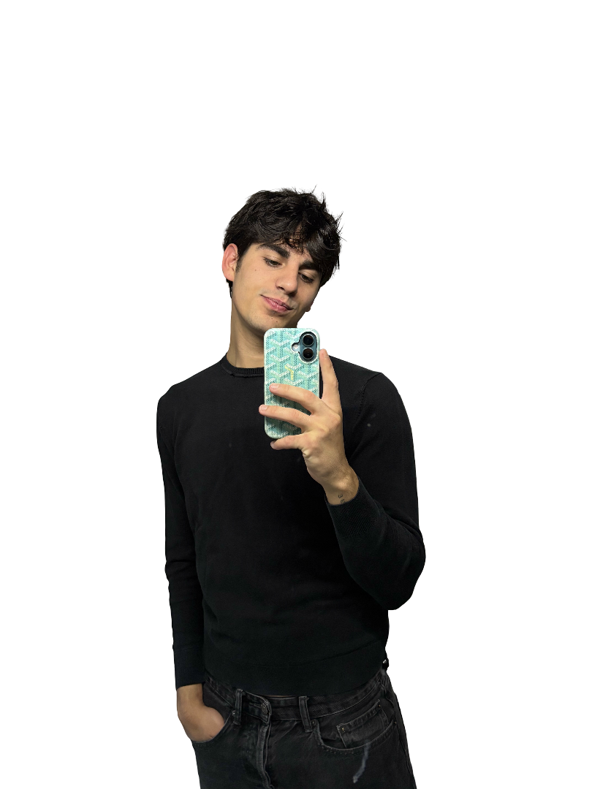
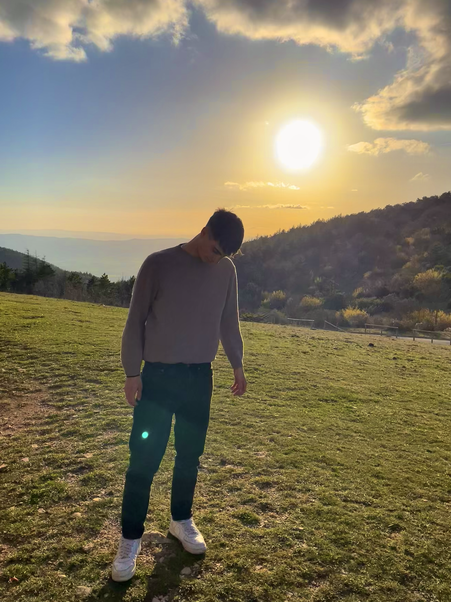
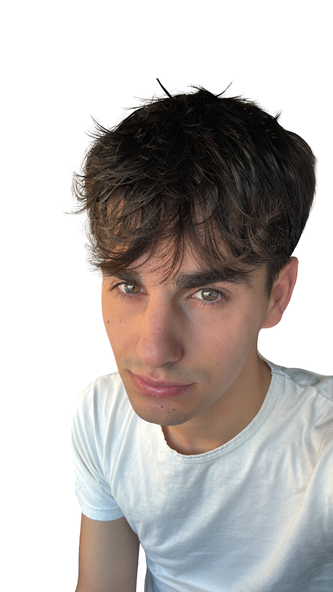
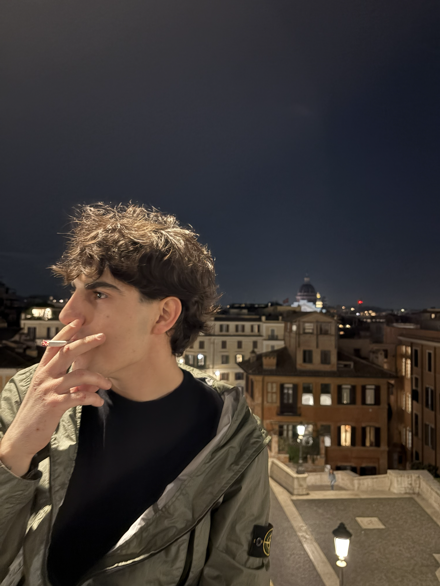
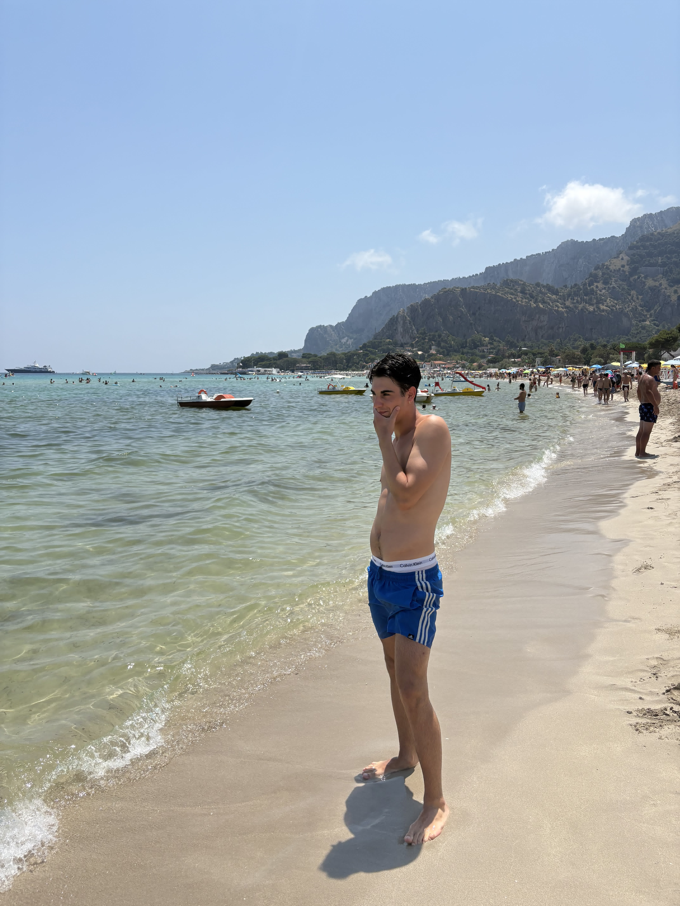
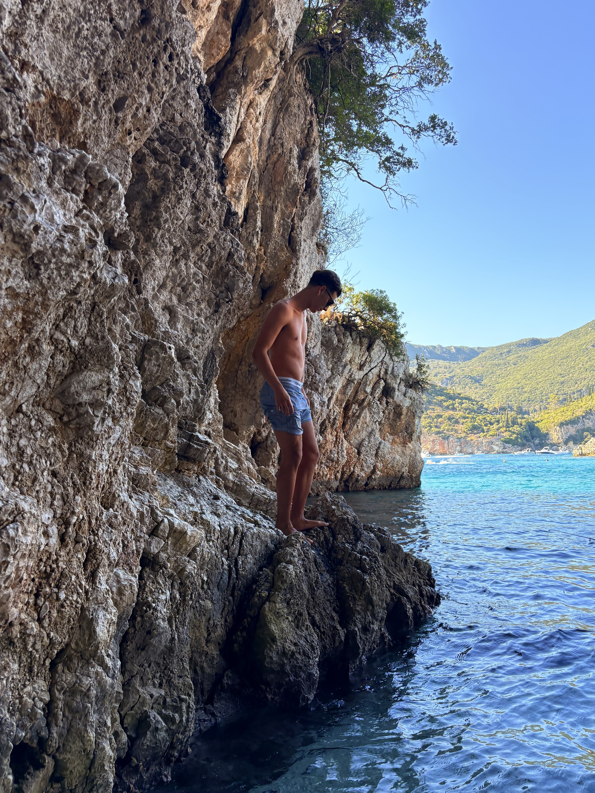
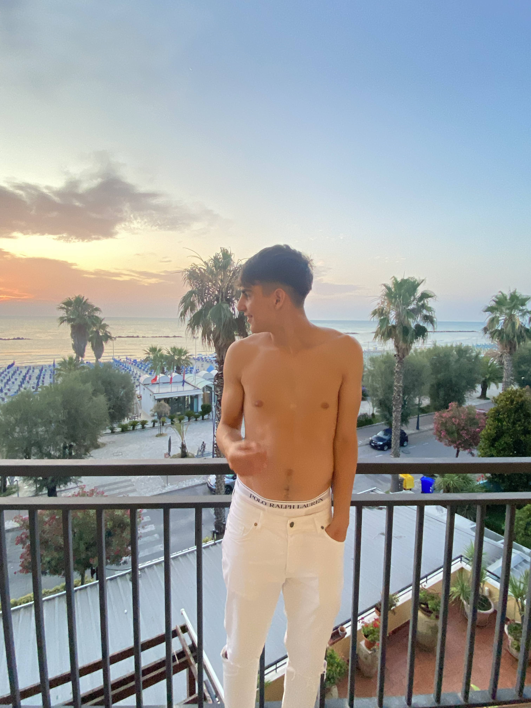

GABRIELE MADEO
Visual Creator & Spatial Photography
Scorri per immergerti
01 // VISIONE
Lo sguardo che cerca l'invisibile.
Mi chiamo Gabriele Madeo. Questo spazio non è una vetrina di servizi né una lista di competenze: è un racconto intimo tra luce, materia e silenzi.
02 // APPROCCIO
Catturare l'istante autentico.
Ogni immagine nasce da un dialogo con lo spazio. La fotografia per me non è decorazione, ma architettura delle emozioni e composizione senza filtri.
03 // PERCORSO
Un unico flusso continuo.
Dall'altezza del cielo alla profondità della terra. Ogni scorrimento è un passo dentro una narrazione visiva che non conosce interruzioni.






